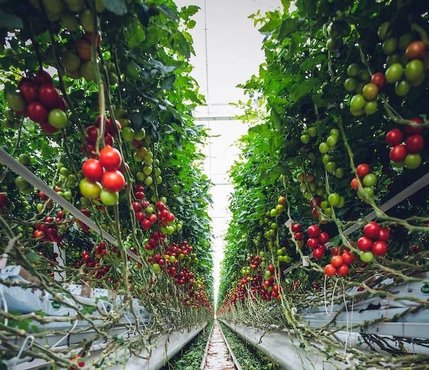
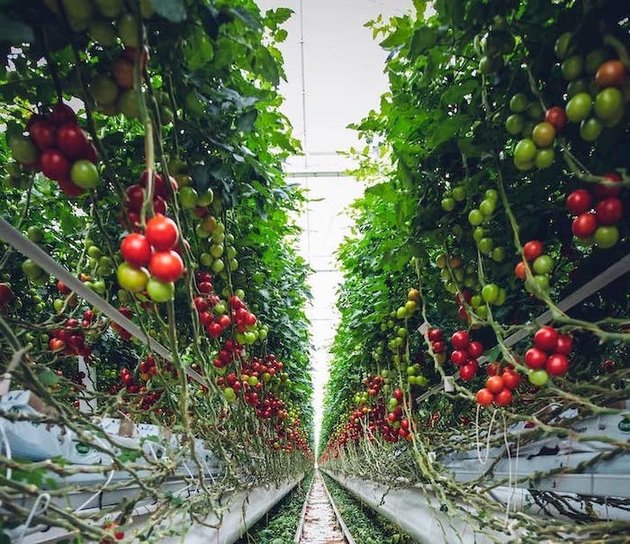
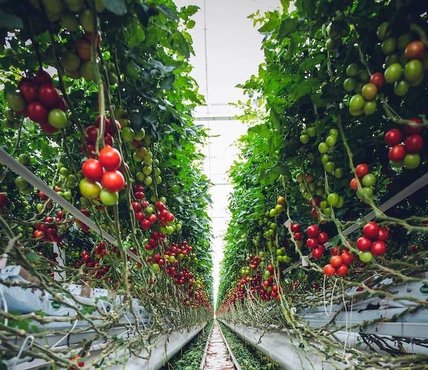
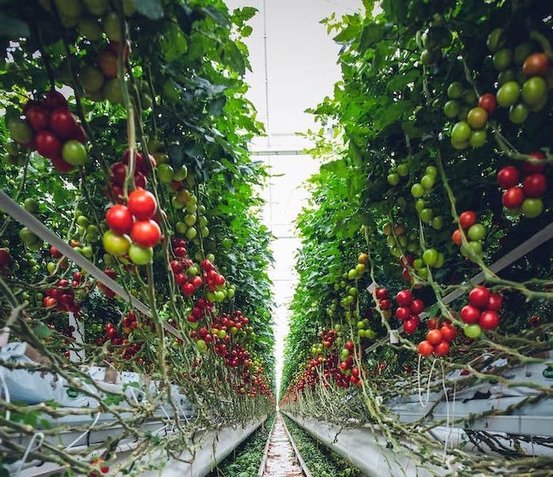

30 objetivo-personal hacer cereales, legumbres, frutas y verduras en estanterías edificios, con la tierra de las montañas les dicen vertical farm se puede realizar de toda clase de alimentos ante el problema de las sequías
 


 
